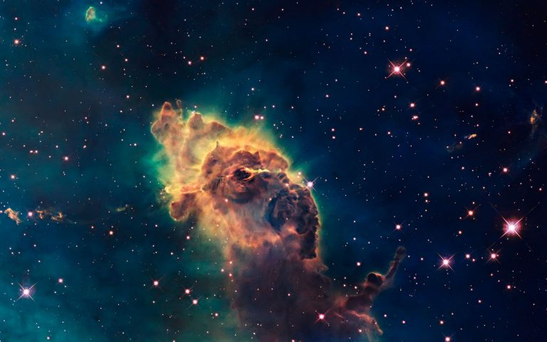

<!DOCTYPE HTML>
<!--
	Landed by HTML5 UP
	html5up.net | @ajlkn
	Free for personal and commercial use under the CCA 3.0 license (html5up.net/license)
-->
<html>
	<head>
		<!-- Google tag (gtag.js) -->
		<script async src="https://www.googletagmanager.com/gtag/js?id=G-4S3M46RV2G"></script>
		<script>
			window.dataLayer = window.dataLayer || [];
			function gtag(){dataLayer.push(arguments);}
			gtag('js', new Date());

			gtag('config', 'G-4S3M46RV2G');
		</script>
		<script src="https://polyfill.io/v3/polyfill.min.js?features=es6"></script>
		<script>
			MathJax = {
				tex: {
					inlineMath: [['$', '$'], ['\\(', '\\)']]
				}
			};
		</script>
		<script type="text/javascript" id="MathJax-script" async
		src="https://cdn.jsdelivr.net/npm/mathjax@3/es5/tex-mml-chtml.js">
		</script>
		<title>Theoretical Techniques - Landed by HTML5 UP</title>
		<meta charset="utf-8" />
		<meta name="viewport" content="width=device-width, initial-scale=1, user-scalable=no" />
		<link rel="stylesheet" href="assets/css/main.css" />
		<noscript><link rel="stylesheet" href="assets/css/noscript.css" /></noscript>
	</head>
	<body class="is-preload">
		<div id="page-wrapper">

			<!-- Header -->
			<header id="header">
				<h1 id="logo"><a href="index.html" class="icon solid  fa-home button"></a></h1>
				<nav id="nav">
					<ul>
						<li>
							<a href="#" class="icon solid fa-bars button"></a>
							<ul>
								<li><a href=#one class="scrolly">Abstract</a></li>
								<li><a href="I1.html">Introduction</a></li>
								<li><a href="I2.html">Advanced</a></li>
								<li><a href="OT.html">Observational Techniques</a></li>
								<li><a href="OR.html">Observational Results</a></li>
								<li><a href="TT.html">Theoretical Techniques</a></li>
								<li><a href="TR.html">Theoretical Results</a></li>
								<li><a href="D.html">Discussion</a></li>
								<li><a href="C.html">Conclusion</a></li>
								<li><a href="no-sidebar.html">Summary</a></li>
								<!-- <li>
									<a href="#">Submenu</a>
									<ul>
										<li><a href="#">Option 1</a></li>
										<li><a href="#">Option 2</a></li>
										<li><a href="#">Option 3</a></li>
										<li><a href="#">Option 4</a></li>
									</ul>
								</li> -->
							</ul>
						</li>
					</ul>	
				</nav>
			</header>

			<!-- Main -->
				<div id="main" class="wrapper style1">
					<div class="container">
						<header class="major">
							<h2>Theoretical Techniques</h2>
							<p>
								Simulations of galaxy formation are critical for interpreting and understanding the meaning of
								structural indices of galaxies.
							</p>
						</header>
						<div class="row gtr-150">
							<div class="col-8 col-12-medium">

								<!-- Content -->
									<section id="content">
										<a href="#" class="image fit"></a>
										<h3>Introduction</h3>

										<p>
											One of the first computer simulations of galaxy formation by
											Toomre & Toomre (1972) showed that the peculiar morphologies of galaxies seen in, e.g., the
											Arp (1966) atlas were due to systems undergoing major mergers rather than some other cause.
										</p>

										<p>
											Mihos & Hernquist (1996) provided one of the first papers to demonstrate in detail how
											the peculiar galaxies seen in deep HST imaging were in fact due to the merger process using
											the TREESPH hydrodynamical method from Hernquist & Katz (1989).
										</p>
										<p>
											Applying quantitative structuralmethods described in Section 2 to these numerical simulations of 
											structural evolution was first carried out by Conselice (2006b).
											The simulations used by Conselice (2006b) are, however, simple in that they do not include the
											effects of star formation or dust, which are well known to produce dramatic changes in 
											morphology (e.g., Taylor-Mager et al. 2007; and see Section 2.3.5).
										</p>

										<p>
											Lotz et al. (2008b) include the first measurements of CAS and Gini/M20 parameters on numerical 
											simulations that include old and young stars, star formation, gas, and dust. 
											Lotz et al. (2008b, 2010a,b) use GADGET/N-body/hydrodynamical simulations of galaxies when 
											ismaging the appearance of these galaxy mergers.
										</p>

										<p>
											Lotz et al. (2008b, 2010a,b) further investigate the location in CAS and Gini/M20 parameter
											space for mergers in different scenarios and for different properties of the merging galaxies. They
											investigate the timescale for how long these simulated galaxies appear as a “merger” on the basis of
											where they fall in these nonparametric structural spaces (see Figure 6 for an example of these simulations).
											These papers also investigate how the dust, viewing angle, orbital parameters, gas properties,
											supernova feedback, and totalmass alter the structuralmerger timescale. Lotz et al. (2008b,
											2010a) find that most properties—the total mass, supernova feedback, viewing angle, and orbital
											properties ofmergers—have very little influence on the derived timescales.
										</p>
										<p>
											The mass ratio and gas mass fraction of the merging galaxies affect the derived merger timescales
											significantly, however.Mergers are identified within both CAS and Gini/M20 at the first pass of the merger as well
											as when the systems finally coalesce to form a remnant (Lotz et al. 2008b). However, merging
											galaxies are not found in the merger area of the nonparametric structural parameters for the entire
											merger. This, however, allows the timescales for structural mergers to be calculated. Lotz et al.
											(2008b, 2010a) find that the asymmetry timescales for gas-rich major mergers are 0.2–0.4 Gyr and
											0.06 Gyr for minor mergers (Lotz et al. 2010a). The Gini/M20 timescales are $\tau _{m}$ = 0.2−0.4 Gyr.
											These are relatively quick timescales and, thus, suggest that the observed merger fraction converts
											to a high merger rate.
										</p>

										<p>
											Lotz et al. (2008b, 2010a) also find that the asymmetry index is sensitive to major mergers
											of ratios of 1:4 or less, whereas the Gini/M20 parameters are sensitive for mergers down to 1:9,
											which enables probing more minor mergers. Lotz et al. (2010b), however, find that very gas-rich
											galaxies, such as those seen in high redshift, may have longer timescales for merging with gasrich
											progenitors, which are likely to be more common at higher redshifts. This would provide a
											“merger” asymmetry signal for more minor mergers as long as they were more gas rich.However,
											it is clear that massive galaxies with M0 > 1010M, where most measurements have been made
											to date at z < 3, have a low gas mass fraction (e.g., Erb et al. 2006, Mannuci et al. 2010, Conselice
											et al. 2013).
										</p>

										
										<footer class="major">
											<ul class="actions special">
												<li><a href="OT.html" class="icon solid fa-arrow-left button"></a></li>
												<li><a href="OR.html" class="icon solid fa-arrow-right button"></a></li>
											</ul>
										</footer>
									</section>

							</div>
							<div class="col-4 col-12-medium">

								<!-- Sidebar -->
									<section id="sidebar">
										<section>
											<h3>GADGET/N-body/hydrodynamical simulations</h3>
											<p>Sed tristique purus vitae volutpat commodo suscipit amet sed nibh. Proin a ullamcorper sed blandit. Sed tristique purus vitae volutpat commodo suscipit ullamcorper commodo suscipit amet sed nibh. Proin a ullamcorper sed blandit..</p>
											<footer>
												<ul class="actions">
													<li><a href="#" class="button">Learn More</a></li>
												</ul>
											</footer>
										</section>
										<hr />
										<section>
											<a href="#" class="image fit"></a>
											<h3>&Lambda;-CDM Model</h3>
											<p>There are many reasons to expect that galaxies form through mergers. Perhaps the
												most overwhelming is that the largely accepted cosmological model a – <a href="https://arxiv.org/abs/astro-ph/0610662">  Λ dominated
												Cold Dark Matter (CDM) based universe </a> – explicitly predicts that galaxies should form
												in the merger process. If mergers are not responsible for the majority of massive galaxy
												formation, it would require a reevaluation of our assumptions concerning dark matter and
												the nature of baryonic physics.</p>
											<footer>
												<ul class="actions">
													<li><a href="#" class="button">Learn More</a></li>
												</ul>
											</footer>
										</section>
									</section>

							</div>
						</div>
					</div>
				</div>

			<!-- Footer -->
				<footer id="footer">
					<ul class="copyright">
						<li>&copy; Untitled. All rights reserved.</li><li>Design: <a href="http://html5up.net">HTML5 UP</a></li>
					</ul>
				</footer>

		</div>

		<!-- Scripts -->
			<script src="assets/js/jquery.min.js"></script>
			<script src="assets/js/jquery.scrolly.min.js"></script>
			<script src="assets/js/jquery.dropotron.min.js"></script>
			<script src="assets/js/jquery.scrollex.min.js"></script>
			<script src="assets/js/browser.min.js"></script>
			<script src="assets/js/breakpoints.min.js"></script>
			<script src="assets/js/util.js"></script>
			<script src="assets/js/main.js"></script>

	</body>
</html>